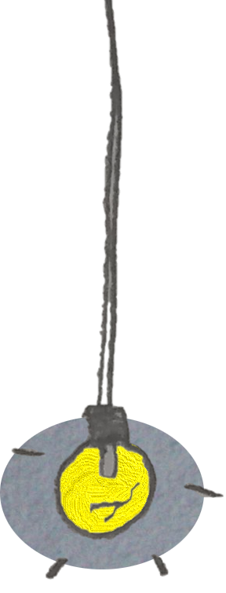
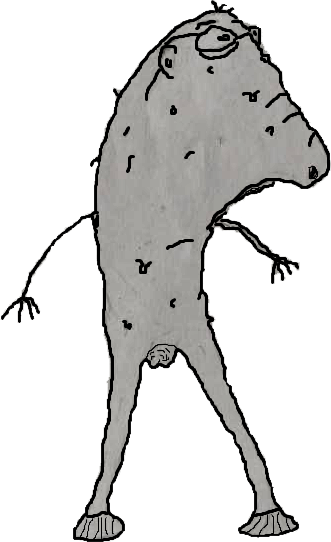
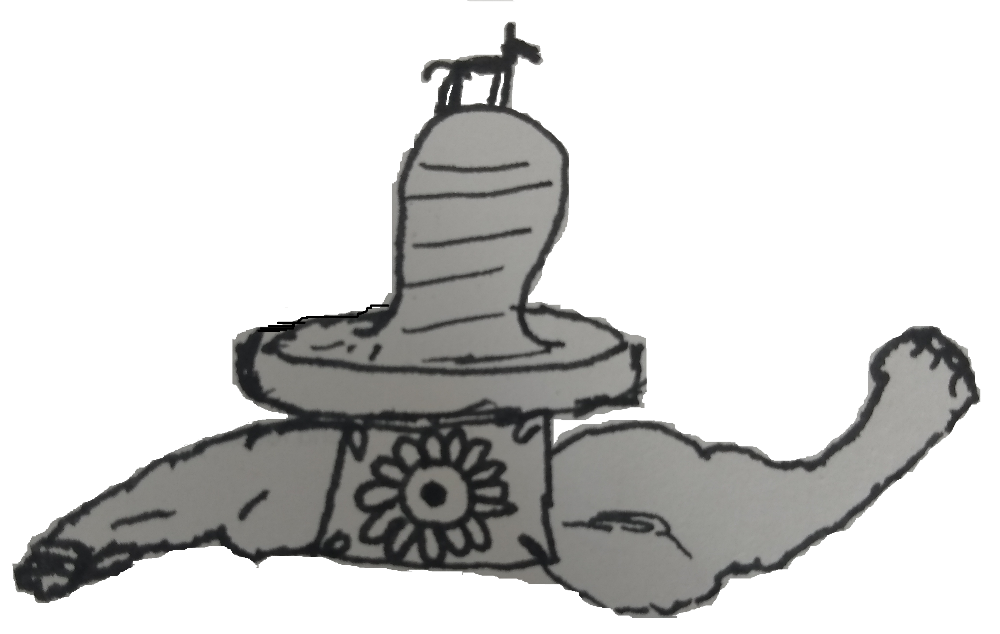

'Sunny Cities' one of the ambient tracks from the game:


The Life of Derek was, in its final form, a bizarre 2d story based side scroller built in unity (formerly godot).
Starting from a series of doodles in school, Derek was an exploration of the stigmas surrounding mental health, and the halo effect - and of the positives and negatives of fantasy.
It was also a great little world to come up with amusing ideas and appearances for characters, setpieces and bizarre scenarios, to relieve stress during my A levels.
Meet Derek, a 40 something year old with schizophrenia, living in a shack outside the city.
Setting out on a shopping trip into the City, he encounters a whimsical dog egging him into adventure.
Should he stick to his mission and pick up his prescriptions, or let a little adventure into his life?
The Life of Derek placed an emphasis on player choice, allowing or denying Derek's fantasies and touching on the consequences of each. With only a couple of instances of combat, most interactions in the game were dialogue based.